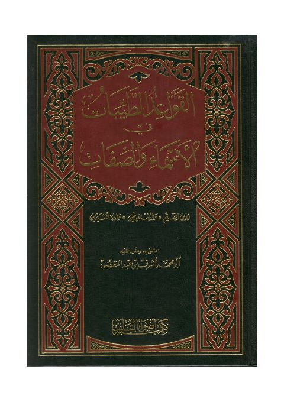

Downloads need an internet connection.
القواعد الطيبات في الأسماء والصفات
Authors: محمد بن صالح العثيمين محمد بن أبي بكر ابن قيم الجوزية محمد الأمين الشنقيطي
Editors: أشرف بن عبد المقصود
Publishers: أضواء السلف
**▫️ العنوان: القواعد الطيبات في الأسماء والصفات** ▪️ المؤلف: #ابن_القيم • #الشنقيطي • #ابن_عثيمين ▫️ المحقق: #أشرف_بن_عبد_المقصود ▪️ الناشر: #أضواء_السلف ▫️ تاريخ النشر: 1416 هـ 1995 م ▪️ بلد النشر: الرياض، #السعودية ▫️ الطبعة: 1 ▪️ عدد الأجزاء: 1 ▫️ الصفحات: 222 ▪️ نوع الوعاء: #كتاب ▫️ التصنيف الرئيسي: #العقيدة_والمذاهب_والأديان ▪️ التصنيف الفرعي: #الأسماء_والصفات ۪